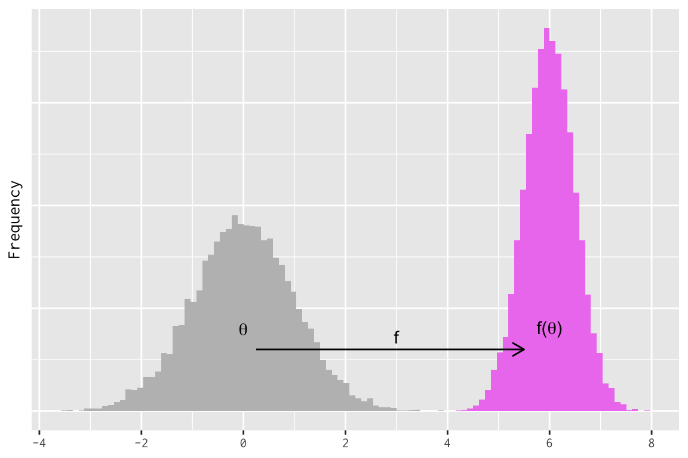
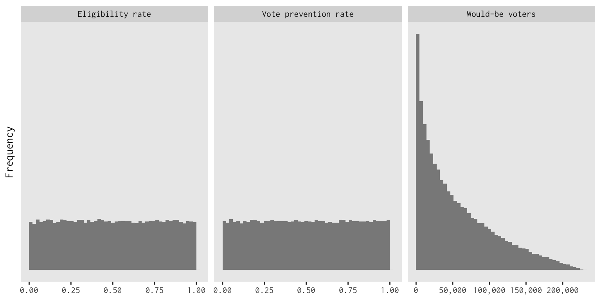

library("latex2exp")
library("magrittr")
library("dplyr")
##
## Attaching package: 'dplyr'
## The following objects are masked from 'package:stats':
##
## filter, lag
## The following objects are masked from 'package:base':
##
## intersect, setdiff, setequal, union
library("tidyr")
##
## Attaching package: 'tidyr'
## The following object is masked from 'package:magrittr':
##
## extract
library("ggplot2")
theme_set(theme_gray(base_family = "InconsolataGo Nerd Font Complete"))When many researchers first encounter Bayesian methods, they are nervous that their choice of prior distribution will ruin their posterior inferences. Estimation under non-Bayesian methods feels “automatic”, but Bayesian methods bear this additional risk of bad priors.1 In this new uncertain territory, it initially feels safer to prefer flatter, more diffuse priors in your model. How bad can flat priors be if, in the extreme, you merely get the same answer that you would have gotten without Bayes?
This blog post showcases why this reasoning breaks down. One, we discuss the fact that if some paramer has a prior, functions of that parameter have their own “implied priors”. And depending on the nature of those functions, the implied prior may take a form that you would not expect when you first specified a flat prior on the original parameter.2 Flat priors in one part of the model will imply non-flat priors for other key quantities. The default tendency to prefer flatness for all priors cannot avoid this. Two, and relatedly, we see how the parameters and functions-on-parameters in our model depend on the parameterization of the model. Different parameterizations will expose different parameters, and some parameters are easier to reason about than others. Parameterization affects whether a prior’s “flatness” bears any resemblance to a prior’s “informativeness”.
Implied priors
Let’s say we have a model parameter, \(\theta\), and we represent our uncertainty about this parameter with a probability distribution. As far as our model is concerned, therefore, \(\theta\) is a random variable. If we pass \(\theta\) to some function \(f\), then the value \(f(\theta)\) is also a random variable with its own distribution. We can call the distribution of \(f(\theta)\) its “implied prior”. Some call it an “induced” prior. Same thing.
We can construct an easy example by linearly transforming a Normal/Gaussian distribution. Even if you don’t do Bayesian statistics, the math here will probably be recognizable nonetheless, so it’s a good example for building intuition. Say that \(\theta\) is a standard Normal variable—mean 0 and standard deviation of 1—and define \(f(\theta) = \mu + \sigma \theta\). The result will be that \(f(\theta)\) is distributed Normal with mean \(\mu\) and standard deviation \(\sigma\). We can simulate this to convince ourselves that this is true. I will use R for this, fixing the values of \(\mu\) and \(\sigma\).
sigma <- 1 / 2
mu <- 6
f <- function(x) { mu + sigma * x }
d = tibble::tibble(theta = rnorm(10000, mean = 0, sd = 1),
f_theta = f(theta))
print(d)
## # A tibble: 10,000 × 2
## theta f_theta
## <dbl> <dbl>
## 1 0.138 6.07
## 2 -0.670 5.67
## 3 -0.476 5.76
## 4 -1.57 5.21
## 5 0.333 6.17
## 6 -0.637 5.68
## 7 0.121 6.06
## 8 1.80 6.90
## 9 -0.688 5.66
## 10 -1.90 5.05
## # … with 9,990 more rows# helpful theme functions
remove_y_axis <- function() {
theme(axis.text.y = element_blank(),
axis.ticks.y = element_blank())
}
remove_grid <- function() {
theme(panel.grid = element_blank())
}# partial histogram w/ fixed args
phist <- purrr::partial(geom_histogram, bins = 100, boundary = 0)
# this alone is sufficient to make the point
histograms <- ggplot(d) +
phist(aes(x = theta), fill = "gray") +
phist(aes(x = f_theta), fill = "violet")
# make it pretty with labels and things
histograms +
annotate("text", x = 0, y = 200, label = TeX('\\theta')) +
annotate("text", x = 6, y = 200, label = TeX("f(\\theta)")) +
annotate("segment", x = 0.25, xend = 5.5, y = 150, yend = 150, arrow = arrow(length = unit(0.3, 'cm'))) +
annotate("text", x = 3, y = 150, label = "f", vjust = -0.5) +
labs(x = NULL, y = "Frequency") +
scale_x_continuous(breaks = seq(-10, 10, 2)) +
remove_y_axis()
## Warning in is.na(x): is.na() applied to non-(list or vector) of type
## 'expression'
## Warning in is.na(x): is.na() applied to non-(list or vector) of type
## 'expression'
For Normal random variables, linear transformation have familiar effects. Add a constant, the mean increases by the same constant. Multiply by a constant, the standard deviation increases by the same factor. Bayesians routinely take advantage of this behavior when they specify Normal priors using a “non-centered” parameterization. The non-centered parameterization factors out a non-zero mean and non-unit scale from a Normal distribution, allowing you to sample \(\theta\) without reference to \(\mu\) or \(\sigma\). This helps keep model parameters uncorrelated in the posterior distribution, which often improves the performance of Markov chain Monte Carlo estimation.
Implied priors for nonlinear functions
Nonelinear functions will stretch or shrink their input values, which matters big time for prior densities. To see why, let’s think about prior density in itself. If we have probability mass of 1 that is uniformly distributed in some fixed interval. What would happen if we shrunk the interval by half? The total mass in our interval stays the same, but the density would double because the “volume” of the interval shrinks. If we stretch the interval by a factor of two, the volume would also increase, but because we have constant probability mass, the density must decrease.
A nonlinear transformation will apply this stretching and shrinking non-uniformly over the domain of the function. Some regions will be stretched (density decreases) and others will be compressed (density increases). As a result, a prior distribution that has a recognizable shape may be unrecognizable after a nonlinear transformation is applied to its support.
I have an example of my own research with Ken Mayer on voter identification requirements in Wisconsin, which I will simplify for the sake of exposition. Let’s say that we have a voter registration file containing all registered voters in 2016 for a certain county. The file has a field that indicates whether each registered voter casted a vote in 2016 (but vote choice is anonymous). In this county, \(N\) of the registrants in the file did not vote (assume perfect measurement of individual turnout). How many of these nonvoters could have voted if not for the state’s voter identification requirement?
There are two parameters that would be helpful to know. First, not every nonvoter in the voter file was still eligible to vote at the time of the election. Many registrants move residences, die, change their names, etc., so only some fraction of the \(N\) nonvoters (say, \(\epsilon \in [0, 1]\)) were eligible to vote as registered in 2016. So that’s one parameter. Next, of the \(N \times \epsilon\) eligible nonvoters, another proportion \(\pi \in [0, 1]\) would have voted if not for the voter identification requirement. Our quantity of interest is the product \(N\epsilon\pi\), of which only \(N\) is known.
This means \(\epsilon\) and \(\pi\) are parameters to be estimated. Let’s say we give these parameters uniform priors on the \([0,1]\) interval; what would be the implied prior for \(N\epsilon\pi\)? Let’s simulate it again. We use a \(\mathrm{Beta}(1,1)\) prior for each probability parameter. The Beta family is commonly used to model unknown probabilities3, and the \(\mathrm{Beta}(1, 1)\) prior is a special case that gives flat density to all probability values. But when we multiply all of these terms together, the result will not be flat at all.
# This is a real value from the data
N <- 229625
v <- tibble::tibble(
pi = rbeta(100000, 1, 1),
epsilon = rbeta(100000, 1, 1),
pop_estimate = N * epsilon * pi
)
print(v)
## # A tibble: 100,000 × 3
## pi epsilon pop_estimate
## <dbl> <dbl> <dbl>
## 1 0.564 0.977 126463.
## 2 0.598 0.836 114816.
## 3 0.968 0.910 202303.
## 4 0.774 0.698 123923.
## 5 0.828 0.502 95486.
## 6 0.589 0.692 93622.
## 7 0.155 0.513 18226.
## 8 0.668 0.621 95333.
## 9 0.166 0.0996 3808.
## 10 0.801 0.348 63959.
## # … with 99,990 more rowsv |>
pivot_longer(cols = everything(), names_to = "param") %>%
mutate(
param_label = case_when(param == "epsilon" ~ "Eligibility rate",
param == "pi" ~ "Vote prevention rate",
param == "pop_estimate" ~ "Would-be voters")
) %>%
ggplot() +
aes(x = value) +
facet_grid(. ~ param_label, scales = "free") +
geom_histogram(alpha = 0.7, boundary = 0, bins = 50) +
scale_x_continuous(labels = scales::comma) +
labs(x = NULL, y = "Frequency") +
remove_y_axis() +
remove_grid()
We started with flat priors for \(\epsilon\) and \(\pi\), but the implied prior for our quantity of interest with far from flat. If I had simply plopped this graphic into my paper and asserted that it was my prior for this quantity, I would probably have been in trouble over how opinionated it looks about my quantity of interest. But it is simply the mechanical result of multiplying two probability values with vague priors. This shows that it is incorrect to think that all vague priors have to look flat. Parameters may have uninformative priors that happen to be flat, but functions of those parameters don’t have to be flat to be uninformative.
Parameterization, parameterization
Now that we have seen a \(\mathrm{Beta}(1,1)\) prior, this would be a good time to talk about parameterization.
Let’s say we observe a variable \(y_{i}\) for a set of observations indexed \(i\), and \(y_{i}\) takes the value 1 with probability \(\pi\) and 0 otherwise. We give \(\pi\) a flat \(\mathrm{Beta}(1,1)\) prior, so our model looks like this: \[\begin{align} y_{i} &\sim \mathrm{Bernoulli}(\pi) \\ \pi &\sim \mathrm{Beta}(1,1). \end{align}\] But in applied modeling, we often model probabilities on the logit scale. So we can introduce the parameter \(\eta = \log\left(\frac{\pi}{1 - \pi}\right)\) and reparameterize like so: \[\begin{align} y_{i} &\sim \mathrm{Bernoulli}(\pi) \\ \pi &= \frac{1}{1 + e^{-\eta}} \end{align}\] Only now we have to set a prior for \(\eta\) instead of \(\pi\). If we wanted our prior to be flat for the probability parameter \(\pi\), what prior would this be for the log-odds \(\eta\)? I will simulate this by drawing \(\pi\) from a flat Beta prior and calculating \(\eta\) for each draw.
ps = tibble::tibble(
pi = rbeta(1000000, 1, 1),
eta = log(pi / (1 - pi))
)ps |>
tidyr::pivot_longer(cols = everything(), names_to = "param") %>%
ggplot() +
aes(x = value) +
facet_grid(. ~ forcats::fct_rev(param), scales = "free", labeller = label_parsed) +
geom_histogram(bins = 100, boundary = 0, alpha = 0.7) +
remove_y_axis() +
remove_grid() +
labs(y = "Freqency", x = "Parameter value")So a flat prior for a probability implies a very non-flat prior for the logit probability. It turns out that the prior on the logit scale is a \(\mathrm{Logistic}(0, 1)\) prior, which feels right when you remember that the inverse link function for logistic regression is the standard Logistic distribution function. We would find a similar result modeling the probability with a probit model instead: we would need a \(\mathrm{Normal}(0,1)\) prior on the probit scale to induce a flat prior on the probability scale.
The lesson here is that priors only have meaning relative to some model parameterization. If there are many ways to rewrite the likelihood for a model, then a flat prior in one parameterization is unlikely to be flat for all parameterizations. The consequence is that not all flat priors will be “noninformative”, and plenty of noninformative priors won’t look flat. It all depends on what a parameter value means in specific parameter space.
Killing your idols: parameterization and causal effects
Social scientists in the causal inference space often try to take a stance of principled agnosticism. They want to impose few assumptions, invoke models only minimally, and use simple estimators based on differences in means. But not even differences in means are safe.
We have an experiment with two groups, a control (0) and a treatment (1), with a binary outcome variable. The groups have unkown means (success probabilities) that we represent with \(\mu_{0}\) and \(\mu_{1}\), so the treatment effect is \(\tau = \mu_{1} - \mu_{0}\). It’s common among social scientists to estimate this as a regression with an indicator for treatment status: \[\begin{align} y_{i} = \mu_{0} + \tau z_{i} + u_{i} \end{align}\] where \(Z_{i}\) is a treatment indicator and \(u_{i}\) is random error. Bayesians would usually rather prefer a model of the means directly: \[\begin{align} y_{i} = (1 - z_{i})\mu_{0} + z_{i}\mu_{1} + u_{i} \end{align}\] because it is easier to give each group the same prior when the model is parameterized directly in terms of means. Setting one prior for the control mean and another prior for the difference in means, which is itself a function of the control mean, is more confusing. So let’s go with the second parameterization.
Because this is causal inference and we want to be principled agnostics, we think that the best way to build a Bayesian representation of our analysis is to give each group mean a flat prior and estimate their difference. But if each group mean has a flat prior, what is the implied prior for the difference in means? Not flat. We simulate another example, giving a flat prior to each mean and pushing the uncertainty into the treatment effect.
# simulate means and calculate difference
rct <- tibble::tibble(
mu_0 = rbeta(1000000, 1, 1),
mu_1 = rbeta(1000000, 1, 1),
trt = mu_1 - mu_0
)
print(rct)
## # A tibble: 1,000,000 × 3
## mu_0 mu_1 trt
## <dbl> <dbl> <dbl>
## 1 0.176 0.977 0.800
## 2 0.265 0.492 0.227
## 3 0.768 0.689 -0.0789
## 4 0.830 0.645 -0.184
## 5 0.366 0.696 0.330
## 6 0.0147 0.879 0.864
## 7 0.945 0.275 -0.670
## 8 0.123 0.306 0.183
## 9 0.935 0.405 -0.530
## 10 0.948 0.989 0.0407
## # … with 999,990 more rowsrct |>
tidyr::pivot_longer(cols = everything(), names_to = "param") %>%
ggplot() +
aes(x = value) +
facet_grid(
. ~ param,
scales = "free",
labeller = as_labeller(c("mu_0" = "Control mean",
"mu_1" = "Treatment mean",
"trt" = "Treatment effect"))
) +
geom_histogram(boundary = 0, alpha = 0.7, bins = 50) +
labs(y = "Frequency", x = "Parameter value") +
remove_y_axis() +
remove_grid()What happened to my vague prior beliefs? Why do I have this non-flat prior for something I thought I wanted to have vague information for? Well, it is still is a vague prior, but it’s wrong to expect it to be flat. Averaging over my prior uncertainty in both groups, my expected difference in means ought to be mean zero (naturally). But more than that, we get a mode at zero because there are many more ways to obtain mean differences near zero than differences far from zero. We get big differences (near -1 or 0) only when both means are far apart, which isn’t as likely to happen randomly as two means that are a little closer together in the prior.
If we really wanted a flat prior on the treatment effect, what we would be saying is that big differences are just as likely as small differences. That seems only possible if the group means are negatively correlated. Weird. That prior may be flat, but it would be informative in a way we wouldn’t want. We would rather set reasonable priors for our means directly and let the treatment effect prior take care of itself.
Let go of the need for flatness
These implications feel strange at first, but they are all around us whether we notice them or not. The flatness of a prior (or any shape, flat or not) is a relative feature of a model parameterization or a quantity of interest, not an absolute one. Inasmuch as we believe priors are at work even when we don’t want to think about them—i.e. we accept Bayesian models as generalizations of likelihood models—we should respect how transforming a likelihood affects which parameters are exposed to the researcher, and which spaces those parameters are defined in. We should know that flat priors aren’t necessarily vague, and vague priors aren’t necessarily flat. What we’re seeing here is that flatness begets non-flatness in tons of scenarios, but that is totally ordinary and nothing to be worried about.
Footnotes
For academic social scientists, at least, for whom unregularized least-squares or maximum likelihood estimation still dominate. Once you begin caring about regularization to prevent overfitting your model to your data, non-Bayesian inference quickly stops being automatic. But that’s academic for you: the luxury of never actually having to pay your loss function.↩︎
The shape of an implied prior can be quite useful in practice, when you know what you are getting into. For example, common methods for regularizing a linear model, like ridge and LASSO regression, have (loosely) analogous Bayesian prior distributions. Topic for a future post maybe.↩︎
Even in non-Bayesian inference, the Clopper-Pearson confidence interval is based on Beta distributions.↩︎